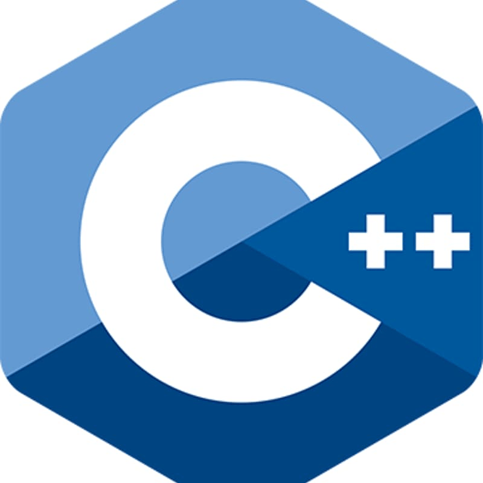

C++ speedrun
Πρόλογος

Οι σημειώσεις αυτές απευθύνονται σε φοιτητές Φυσικής που θέλουν να μάθουν C++ με σύγχρονο τρόπο και με γνώμονα τις ανάγκες της επιστημονικής δουλειάς, με έμφαση στην κατασκευή ασφαλούς, οργανωμένου και αποδοτικού κώδικα.
Γιατί C++;
Η C++ παραμένει μία από τις βασικές γλώσσες του επιστημονικού υπολογισμού. Σε αυτήν είναι γραμμένα εργαλεία όπως το ROOT και το Geant4 του CERN, και τα τελευταία χρόνια είναι ο βασικός υποψήφιος για υψηλής απόδοσης προσομοιώσεις (High-Performance-Computing, HPC). Συνδυάζει υψηλές επιδόσεις με εργαλεία που επιτρέπουν τη συγγραφή καθαρού, ασφαλούς και επαναχρησιμοποιήσιμου κώδικα.
Τι εννοούμε «σύγχρονη» C++
Από το πρότυπο C++11 και έπειτα η γλώσσα έχει αλλάξει ριζικά. Εδώ τη διδάσκουμε όπως γράφεται σήμερα (C++17 και C++20), καθώς προσφέρει εντολές υψηλότερου επιπέδου σε σχέση με την C, που αυτοματοποιούν ορισμένες διαδικασίες με μηδενικό κόστος στην απόδοση (έξυπνοι δείκτες, std::vector, κ.α.).
Τι χρειάζεται να ξέρετε
Δεν απαιτείται προηγούμενη εμπειρία στην C++, ούτε στην C. Μια στοιχειώδης εξοικείωση με κάποια άλλη γλώσσα προγραμματισμού (π.χ. Python) βοηθά, αλλά δεν είναι απαραίτητη. Τα μαθηματικά που χρησιμοποιούνται δεν ξεπερνούν το επίπεδο των πρώτων ετών σπουδών.
Πώς να διαβάσετε τις σημειώσεις
Ο προγραμματισμός μαθαίνεται στην πράξη. Πληκτρολογήστε και τρέξτε μόνοι σας τα παραδείγματα, πειραματιστείτε τροποποιώντας τα και λύστε τις ασκήσεις.
Θα χρειαστείτε τους δύο πιο διαδεδομένους compilers (g++ και clang++), και ένα ολοκληρωμένο περιβάλλον ανάπτυξης λογισμικού (Integrated-Development-Environment, IDE).